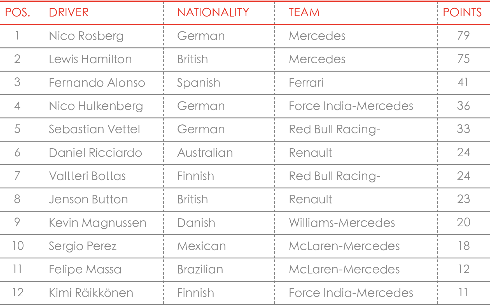
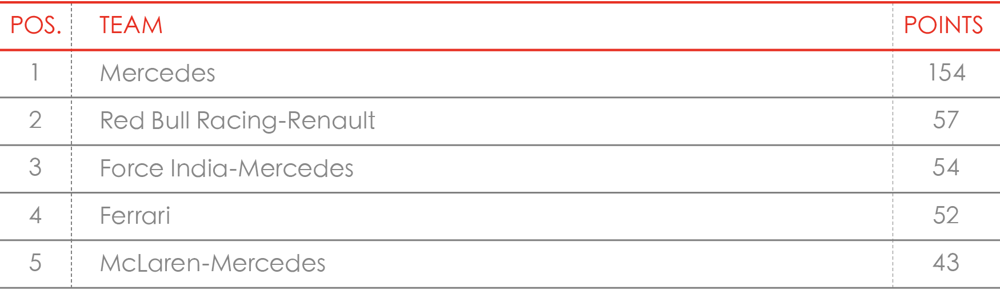

Modena Motori Taiwan
e-Newsletter
ISSUE 05 April 2014
親愛的Ferrari法拉利車主 您好
很高興在此與您分享Ferrari法拉利又一令人振奮的消息：全球第二座Ferrari World 法拉利主題樂園將在2016於巴塞隆納開幕。
這個即將座落於西班牙的全新Ferrari法拉利主題樂園，特別針對有著眾多F1賽車迷的歐洲，以Ferrari法拉利F1賽車與法拉利車隊Scuderia Ferrari為骨幹，精心打造一座有別於阿布達比以Ferrari法拉利品牌故事為主的樂園；此全球主題樂園將透過更極致的速度體驗、聲光熱情與高級渡假飯店的頂級服務來帶給全球熱愛Ferrari法拉利品牌的人們全新的休閒體驗，預估全球造訪此全新Ferrari World法拉利主題樂園的全年遊客量將達350萬人次！
這座預計斥資上億歐元的主題樂園與2010年底開幕的阿布達比Ferrari World主題樂園都是世上獨有以汽車品牌為唯一主題的樂園，這代表了Ferrari法拉利品牌的影響力與魅力已經達到無遠弗屆的程度，受到Ferrari法拉利的熱情感動的人們不分年齡、國界。這一切的成果應歸功於Ferrari法拉利在1947年開始創立時便持續至今日的許多堅持，這其中包含從不間斷參與F1賽事長達60多年、堅持透過經典車部門維持供應甚至復刻所有經典Ferrari法拉利的零件、持續投入打造每一輛Ferrari法拉利都能同時兼具雋永的設計與令人興奮的性能、持續提供車主除了Ferrari法拉利車輛以外的更多頂級服務與精彩品牌生活體驗活動。有太多的堅持造就了今日的Ferrari法拉利，而我們也將延續這份堅持來為您提供更多的服務與活動，與您一起分享這份Ferrari法拉利獨有的熱情。
劉冠甫 Vincent Liu
Ferrari 法拉利品牌總經理
臺灣蒙地拿股份有限公司
3月30日的F1馬來西亞站，在經過了雪邦賽車場炎熱的考驗下。Ferrari法拉利的Fernando Alonso取得了第4名，而Kimi Räikkönen因為在賽事前段遇上了爆胎，因此僅以12名完賽。
上海站經歷了4月19日排位賽的雨天，許多車手衝出賽道後，4月20日2014 F1上海大獎賽決賽在涼爽的好天氣中展開。在19日的排位賽當中依舊是由Lewis Hamilton取得桿位起跑，排名2、3的分別是Red Bull車隊的Daniel Ricciardo以及上屆車王Sebastian Vettel，Hamilton隊友Nico Rosberg第四位發車，Ferrari 法拉利車手Fernando Alonso排在第5。而Ferrari 法拉利的另一位車手，芬蘭冰人Kimi Räikkönen以第11位發車。
Ferrari法拉利在此戰有了長足的進步，Fernando Alonso以第五位起跑，在起跑後與Felipe Massa的賽車有輕微的碰撞，所幸並未影響賽車性能。同時在賽道中後段，Fernando Alonso更是靠著其精湛的駕駛技術以及豐富的賽場經驗，成功的抵擋了來自後方Daniel Ricciardo的追擊，拿下頒獎台的最後一個席次。而從11位起跑的Kimi Räikkönen，雖然在排位賽遭遇賽車機械問題，但決賽時仍能拿下第八，實屬不易。
比賽當天經過了55圈的賽事，最終結果為：Lewis Hamilton (Mercedes AMG)，Nico Rosberg (Mercedes AMG)，Fernando Alonso (Ferrari 法拉利)，Daniel Ricciardo （Red Bull Racing-Renault），Sebastian Vettel （Red Bull Racing-Renault），Nico Hülkenberg （Force India-Mercedes），Valtteri Bottas （Williams-Mercedes），Kimi Räikkönen (Ferrari 法拉利)，Sergio Pérez （McLaren-Mercedes），Daniil Kvyat（STR-Renault）。Ferrari法拉利在此戰有了長足的進步，Fernando Alonso拿下頒獎台的最後一個席次，而Kimi Räikkönen拿下第八。
車手積分榜
車隊積分榜
經過了這三站後，目前Ferrari法拉利車隊在積分榜上暫居第四。在車手積分榜中，Fernando Alonso以41分站位居第三，而Kimi Räikkönen則以總分11分位居車手積分榜第十二位。
時序進入5月份，接下來F1將會轉移陣地回歐洲大陸，分別在西班牙卡塔隆尼亞（Catalunya, Spain）賽道以及摩納哥蒙地卡羅賽道舉行，時間為5月9日至5月11日西班牙卡塔隆尼亞站、5月22日至25日摩納哥蒙地卡羅站。
喜愛F1的車主們也請為Ferrari法拉利的兩位車手加油！
3月30日的F1馬來西亞站，在經過了雪邦賽車場炎熱的考驗下。Ferrari法拉利的Fernando Alonso取得了第4名，而Kimi Räikkönen因為在賽事前段遇上了爆胎，因此僅以12名完賽。
上海站經歷了4月19日排位賽的雨天，許多車手衝出賽道後，4月20日2014 F1上海大獎賽決賽在涼爽的好天氣中展開。在19日的排位賽當中依舊是由Lewis Hamilton取得桿位起跑，排名2、3的分別是Red Bull車隊的="name">Daniel Ricciardo以及上屆車王Sebastian Vettel，Hamilton隊友Nico Rosberg第四位發車，Ferrari 法拉利車手Fernando Alonso排在第5。而Ferrari 法拉利的另一位車手，芬蘭冰人Kimi Räikkönen以第11位發車。
Ferrari法拉利在此戰有了長足的進步，Fernando Alonso以第五位起跑，在起跑後與Felipe Massa的賽車有輕微的碰撞，所幸並未影響賽車性能。同時在賽道中後段，Fernando Alonso更是靠著其精湛的駕駛技術以及豐富的賽場經驗，成功的抵擋了來自後方Daniel Ricciardo的追擊，拿下頒獎台的最後一個席次。而從11位起跑的Kimi Räikkönen，雖然在排位賽遭遇賽車機械問題，但決賽時仍能拿下第八，實屬不易。
比賽當天經過了55圈的賽事，最終結果為：Lewis Hamilton (Mercedes AMG)，Nico Rosberg (Mercedes AMG)，Fernando Alonso (Ferrari 法拉利)，Daniel Ricciardo （Red Bull Racing-Renault），Sebastian Vettel （Red Bull Racing-Renault），Nico Hülkenberg （Force India-Mercedes），Valtteri Bottas （Williams-Mercedes），Kimi Räikkönen (Ferrari 法拉利)，Sergio Pérez （McLaren-Mercedes），Daniil Kvyat（STR-Renault）。Ferrari法拉利在此戰有了長足的進步，Fernando Alonso拿下頒獎台的最後一個席次，而Kimi Räikkönen拿下第八。
車手積分榜
車隊積分榜
經過了這三站後，目前Ferrari法拉利車隊在積分榜上暫居第四。在車手積分榜中，Fernando Alonso以41分站位居第三，而Kimi Räikkönen則以總分11分位居車手積分榜第十二位。
時序進入5月份，接下來F1將會轉移陣地回歐洲大陸，分別在西班牙卡塔隆尼亞（Catalunya, Spain）賽道以及摩納哥蒙地卡羅賽道舉行，時間為5月9日至5月11日西班牙卡塔隆尼亞站、5月22日至25日摩納哥蒙地卡羅站。
喜愛F1的車主們也請為Ferrari法拉利的兩位車手加油！
F1完整賽程資訊
FOX體育台 F1轉播時間表
Mille Miglia（義大利語意即：千里）曾于1927 年至1957年（二次大戰前舉行13次，二戰後舉行11次）於義大利共舉行了24次的開放式公路耐力賽。這個歷史悠久的比賽造就了一干舉世聞名的Ferrari法拉利經典跑車，如F166 S Coupe Allemano、195 S Berlinetta Touring、340 America Berlinetta Vignale、250 S Berlinetta Vignale、290 MM Spider Scaglietti、315 Sport。
自1977年以來，“Mille Miglia”已經脫胎換骨成為一個規律性的經典古董車比賽。參與僅限於生產於1957年前的經典古董車。而比賽路線（Brescia布雷西亞—Rome羅馬往返）相當類似
於原來的比賽路線。起點和終點皆位於布雷西亞的Viale Venezia酒店。
而Ferrari Tribute to Mille Miglia 2014則是Ferrari法拉利為了讓更多車主能體驗此一極具意義的賽車活動的年度車主盛事。活動將於5月15日至5月18日於義大利舉行，為期4天的旅程將由Ferrari法拉利的全球副總裁也是Enzo Ferrari兒子的Piero Ferrari親自領隊，帶少數幸運的車主透過這個長途賽事領略義大利風情以及Mille Miglia悠久的歷史。
若您有興趣了解更多Ferrari Tribute to Mille Miglia 2014，請洽臺灣蒙地拿或與您的銷售顧問聯繫。
Mille Miglia（義大利語意即：千里）曾于1927 年至1957年（二次大戰前舉行13次，二戰後舉行11次）於義大利共舉行了24次的開放式公路耐力賽。
這個歷史悠久的比賽造就了一干舉世聞名的Ferrari法拉利經典跑車，如F166 S Coupe Allemano、195 S Berlinetta Touring、340 America Berlinetta Vignale、250 S Berlinetta Vignale、290 MM Spider Scaglietti、315 Sport。
自1977年以來，“Mille Miglia”已經脫胎換骨成為一個規律性的經典古董車比賽。參與僅限於生產於1957年前的經典古董車。而比賽路線（Brescia布雷西亞—Rome羅馬往返）相當類似
於原來的比賽路線。起點和終點皆位於布雷西亞的Viale Venezia酒店。
而Ferrari Tribute to Mille Miglia 2014則是Ferrari法拉利為了讓更多車主能體驗此一極具意義的賽車活動的年度車主盛事。活動將於5月15日至5月18日於義大利舉行，為期4天的旅程將由Ferrari法拉利的全球副總裁也是Enzo Ferrari兒子的Piero Ferrari親自領隊，帶少數幸運的車主透過這個長途賽事領略義大利風情以及Mille Miglia悠久的歷史。
若您有興趣了解更多Ferrari Tribute to Mille Miglia 2014，請洽臺灣蒙地拿或與您的銷售顧問聯繫。
適逢馬年，為了慶祝Ferrari法拉利躍馬精神以及征戰賽道60多年的歷史，Ferrari法拉利特別選在F1上海站前夕於上海市知名酒吧舉辦僅有Ferrari法拉利車主才能入場的F1 Party。活動當天除了Ferrari法拉利車隊車手Kimi Räikkönen和測試車手Giancarlo Fisichella出席之外，知名藝人李玟也親臨現場表演。同時Ferrari法拉利大中華區總裁兼首席執行官Mr. Edwin Fenech也為此次活動的高潮—"躍馬之年．馬到功成"專屬徽幟揭幕。
從1950年第一場F1舉辦至今，Ferrari法拉利車隊是唯一的車廠參加了所有的比賽。在60多年
的F1歷史當中，一共包辦了15次車手冠軍以及16次車隊冠軍。除了F1賽場之外，Ferrari在世界上許多的賽事當中的輝煌成績亦是有目共睹，5000多場的勝利說明了躍馬圖騰的卓越精神。
為了紀念中國馬年並且呼應Ferrari法拉利廠徽精神，中國專屬的躍馬徽幟採用中國古代玉璽的設計概念，集合了中國書法精隨以及印章文化，用上Ferrari法拉利專屬紅色，增添了此徽幟的中國元素。同時Ferrari也贈與Fernando Alonso以及Kimi Räikkönen專屬中文印章，讓此次的活動更具意義。
兩年一度的北京國際車展，已於4月21日如火如荼地於北京展開。今年的Ferrari法拉利展區，原廠特別展出了California T、FF、F12 Berlinetta、458 Speciale、458 Spider等車型，其中California T為大中華區首次亮相，從原先的V8自然進氣引擎換上了最新研發的V8渦輪引擎。FF則為Ferrari法拉利當家V12 GT跑車，其先進與獨家的四輪傳動科技能為車主在任何路況任何氣候提供最佳的駕馭樂趣。F12 Berlinetta則為史上最強的道路版Ferrari法拉利，V12自然進氣引擎可輸出740hp，0–200公里加速僅需8.5秒。
而甫於臺北車展亮相的458 Speciale與458 Spider也雙雙以特殊配色於北京車展連袂亮相。
車展時間：4月21日–4月29日
| Mon | Tue | Wed | Thu | Fri | Sat | Sun |
| 21 | 22 | 23 | 24 | 25 | 26 | 27 |
| 28 | 29 |
車展地點：中國國際展覽中心（新館）
適逢馬年，為了慶祝Ferrari法拉利躍馬精神以及征戰賽道60多年的歷史，Ferrari法拉利特別選在F1上海站前夕於上海市知名酒吧舉辦僅有Ferrari法拉利車主才能入場的F1 Party。
活動當天除了Ferrari法拉利車隊車手Kimi Räikkönen和測試車手Giancarlo Fisichella 出席之外，知名藝人李玟也親臨現場表演。同時Ferrari法拉利大中華區總裁兼首席執行官Mr. Edwin Fenech也為此次活動的高潮—"躍馬之年．馬到功成"專屬徽幟揭幕。
從1950年第一場F1舉辦至今，Ferrari法拉利車隊是唯一的車廠參加了所有的比賽。在60多年
的F1歷史當中，一共包辦了15次車手冠軍以及16次車隊冠軍。除了F1賽場之外，Ferrari在世界上許多的賽事當中的輝煌成績亦是有目共睹，5000多場的勝利說明了躍馬圖騰的卓越精神。
為了紀念中國馬年並且呼應Ferrari法拉利廠徽精神，中國專屬的躍馬徽幟採用中國古代玉璽的設計概念，集合了中國書法精隨以及印章文化，用上Ferrari法拉利專屬紅色，增添了此徽幟的中國元素。同時Ferrari也贈與Fernando Alonso以及Kimi Räikkönen專屬中文印章，讓此次的活動更具意義。
兩年一度的北京國際車展，已於4月21日如火如荼地於北京展開。今年的Ferrari法拉利展區，原廠特別展出了California T、FF、F12 Berlinetta、458 Speciale、458 Spider等車型，其中California T為大中華區首次亮相，從原先的V8自然進氣引擎換上了最新研發的V8渦輪引擎。FF則為Ferrari法拉利當家V12 GT跑車，其先進與獨家的四輪傳動科技能為車主在任何路況任何氣候提供最佳的駕馭樂趣。F12 Berlinetta則為史上最強的道路版Ferrari法拉利，V12自然進氣引擎可輸出740hp，0–200公里加速僅需8.5秒。而甫於臺北車展亮相的458 Speciale與458 Spider也雙雙以特殊配色於北京車展連袂亮相。
車展時間：4月21日–4月29日
| Mon | Tue | Wed | Thu | Fri | Sat | Sun |
| 21 | 22 | 23 | 24 | 25 | 26 | 27 |
| 28 | 29 |
有「九彎十八拐」之稱的北宜公路以及饒富駕駛樂趣的106線道，伴隨著BELLAVITA 義大利餐廳享受義大利美食，同時邀請專業造型師Roger鄭建國老師在BELLAVITA TOD΄S X Ferrari時尚講座與車主們分享歐式的駕駛穿搭風格，這些元素組成了4月11日Ferrari法拉利一日車駕活動。Ferrari 法拉利的精心安排讓當日出席的所有車主皆有賓至如歸之感。未來Ferrari 法拉利也會持續舉辦更多類似結合車駕、餐聚與不同主題等更多元化的車主活動，各位車主敬請期待。
橫掃全球總計獲得超過60多項大獎肯定的458車款，是一部出生就注定不凡的Ferrari法拉利，其卓越且令人血脈噴張的駕馭樂趣更是讓全球專業媒體無不一一折服，稱之為陸地上最有樂趣的跑車。為了讓Ferrari法拉利車主可以近距離感受458全車系席捲全球的熱情魅力，Ferrari法拉利特別舉辦北、中、南458全車系VIP賞車會，展出458 Italia、458 Spider與458 Speciale等三款車型。誠摯的邀請車主們共襄盛舉。
賞車會日期：
臺北 4月18日–4月20日 |
|||||||
| Mon | Tue | Wed | Thu | Fri | Sat | Sun | |
| 14 | 15 | 16 | 17 | 18 | 19 | 20 | |
臺中 4月26日–4月28日 |
|||||||
| Mon | Tue | Wed | Thu | Fri | Sat | Sun | |
| 22 | 23 | 24 | 25 | 26 | 27 | 28 | |
高雄 5月2日–5月4日 |
|||||||
| Mon | Tue | Wed | Thu | Fri | Sat | Sun | |
| 28 | 29 | 30 | 1 | 2 | 3 | 4 | |
對於許多人而言，義大利是個風情萬種的國度。除了有象徵速度的Ferrari法拉利跑車之外，還有許多手工精品，如同Ferrari法拉利跑車一般，來自Ferrari法拉利的限定精品同樣值得您細細品味。
即日起至5月15日，Ferrari法拉利限定精品特別優惠活動展開。不限車主，只要您憑手機顯示或是印出e-newsletter，即可享有75折優惠。
如果對於優惠活動有任何疑問，請洽Ferrari法拉利精品銷售專員 Jaime 王鈺婷 小姐
電話：02-2627-5990 ext.16
手機：0978-269-552
有「九彎十八拐」之稱的北宜公路以及饒富駕駛樂趣的106線道，伴隨著BELLAVITA義大利餐廳享受義大利美食，同時邀請專業造型師Roger鄭建國老師在BELLAVITA TOD΄S X Ferrari時尚講座與車主們分享歐式的駕駛穿搭風格，這些元素組成了4月11日Ferrari法拉利一日車駕活動。
Ferrari法拉利的精心安排讓當日出席的所有車主皆有賓至如歸之感。未來Ferrari法拉利也會持續舉辦更多類似結合車駕、餐聚與不同主題等更多元化的車主活動，各位車主敬請期待。
橫掃全球總計獲得超過60多項大獎肯定的458車款，是一部出生就注定不凡的Ferrari法拉利，其卓越且令人血脈噴張的駕馭樂趣更是讓全球專業媒體無不一一折服，稱之為陸地上最有樂趣的跑車。為了讓Ferrari法拉利車主可以近距離感受458全車系席捲全球的熱情魅力，Ferrari法拉利特別舉辦北、中、南458全車系VIP賞車會，展出458 Italia、458 Spider與458 Speciale等三款車型。誠摯的邀請車主們共襄盛舉。
賞車會日期：
臺北 4月18日–4月20日 |
|||||||
| Mon | Tue | Wed | Thu | Fri | Sat | Sun | |
| 14 | 15 | 16 | 17 | 18 | 19 | 20 | |
臺中 4月26日–4月28日 |
|||||||
| Mon | Tue | Wed | Thu | Fri | Sat | Sun | |
| 22 | 23 | 24 | 25 | 26 | 27 | 28 | |
高雄 5月2日–5月4日 |
|||||||
| Mon | Tue | Wed | Thu | Fri | Sat | Sun | |
| 28 | 29 | 30 | 1 | 2 | 3 | 4 | |
對於許多人而言，義大利是個風情萬種的國度。除了有象徵速度的Ferrari法拉利跑車之外，還有許多手工精品，如同Ferrari法拉利跑車一般，來自Ferrari法拉利的限定精品同樣值得您細細品味。
即日起至5月15日，Ferrari法拉利限定精品特別優惠活動展開。不限車主，只要您憑手機顯示或是印出e-newsletter，即可享有75折優惠。
如果對於優惠活動有任何疑問，請洽Ferrari法拉利精品銷售專員 Jaime 王鈺婷 小姐
電話：02-2627-5990 ext.16
手機：0978-269-552
1961 Ferrari 250 GT Series II
Cabriolet by Pininfarina
成交金額：1,760,000美金
250 GT是Ferrari在1950–1960年間，相當重要的產品陣線，除了發展出極多的衍生車款外，在銷售上也有相當亮眼的表現，即便在經過將近60年後的今天，在拍賣市場中仍是大熱門。
而這次的標物，則是1961年生產的250 GT Series II Cabriolet by Pininfarina，它採用了雙座敞篷車身設定，並鑲嵌有Pininfarina的廠徽，在初期原本是送到法國巴黎的經銷商，隨後則經過交易而輾轉由收藏家Pray擁有；本車使用2,953cc的V12引擎，動力則為240hp。
1961 Ferrari 250 GT Series II
Cabriolet by Pininfarina
成交金額：1,760,000美金
250 GT是Ferrari在1950–1960年間，相當重要的產品陣線，除了發展出極多的衍生車款外，在銷售上也有相當亮眼的表現，即便在經過將近60年後的今天，在拍賣市場中仍是大熱門。
而這次的標物，則是1961年生產的250 GT Series II Cabriolet by Pininfarina，它採用了雙座敞篷車身設定，並鑲嵌有Pininfarina的廠徽，在初期原本是送到法國巴黎的經銷商，隨後則經過交易而輾轉由收藏家Pray擁有；本車使用2,953cc的V12引擎，動力則為240hp。
訊息連絡人：行銷公關專員 郭哲維
elvin.kuo@modenamotori.com.tw
02-2627-1559 ext.15
台中服務中心
台中市西屯區文心路三段109之6號
04-2313-6599
台北展示中心
台北市內湖區港墘路200號1樓
02-2627-5990
高雄展示 & 服務中心
高雄市左營區新莊一路315號
07-359-2690